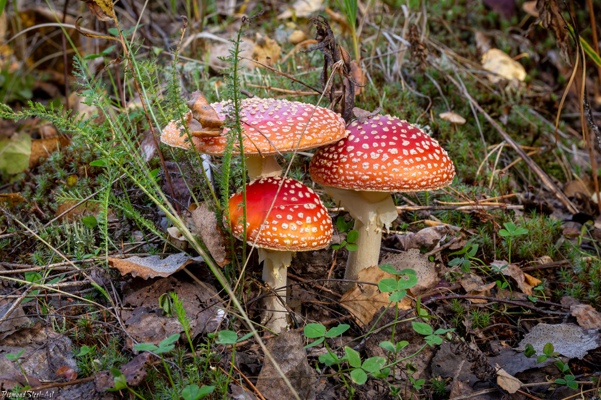
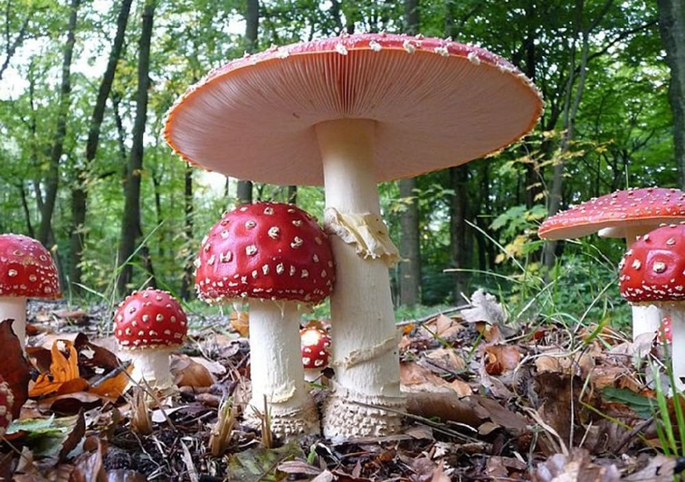

 Мухомо́р (Amanita) — рід грибів родини мухоморових (Amanitaceae). Українська назва, а також назви в багатьох мовах (майже усі слов'янські, англ. fly agaric) та ін.) походять від відомого з давнини застосування настоїв цих грибів як інсектицидів. Спочатку ця назва стосувалася тільки мухомора червоного, пізніше була поширена на весь рід. Латинське «Amanita» походить від назви гори Аманон (Amanon) в Кілікії, що була славнозвісна великою кількістю їстівних грибів.
Відомо кілька сотень видів. Найвідоміші з них:
 Більшість мухоморів неїстівні або сильно отруйні, є небезпечні смертельно отруйні види, які іноді плутають з їстівними грибами (бліда поганка, мухомор смердючий). Загальновідомий мухомор червоний, крім середньої токсичності, має також галюциногенну дію. Але є серед мухоморів і умовно-їстівні та дуже цінні їстівні гриби, що в місцях розповсюдження вважаються делікатесними, вони іноді вживаються навіть без теплової обробки, свіжими в салатах. Так, умовно-їстівними є звичайні для лісів помірного клімату мухомор червоніючий та декілька видів поплавків (мухомори з підроду Amanitopsis). До найцінніших грибів належать мухомор цезарів та ще декілька видів з секції Cesareae, вони відомі в Південно-східній Азії та на Далекому Сході, в Північній Америці та Центральній Африці. Деякі з цих грибів лише нещодавно стали відомі вченим, а місцевим населенням вони збираються та продаються на ринках Китаю, Японії, Мексики, Танзанії. Помірно токсичні види, здебільшого мухомор червоний, історично вживалися деякими народами як психотропний засіб, звичайно таке вживання було пов'язане з релігійними ритуалами. Мухомор червоний має медичне використання, їх застосовують в народній та офіційній медицині.
Початок